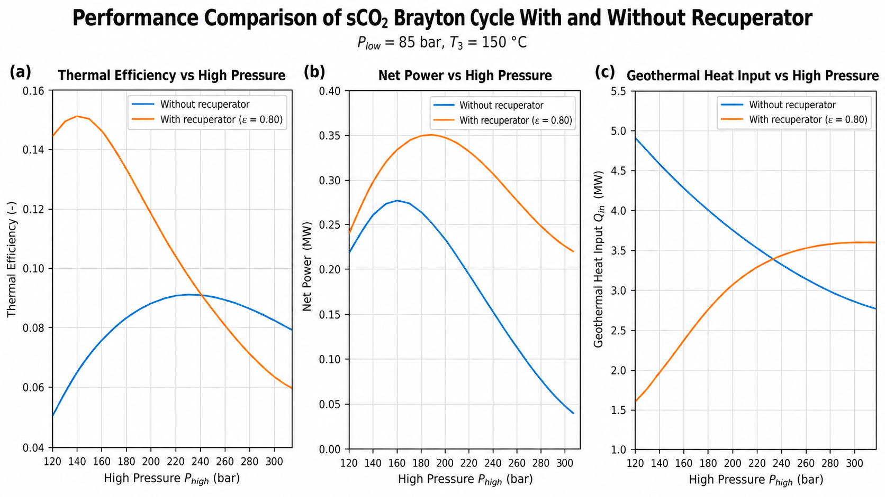
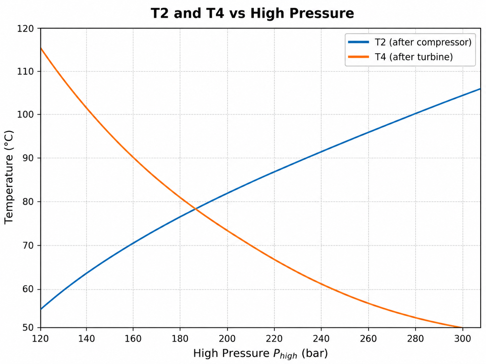
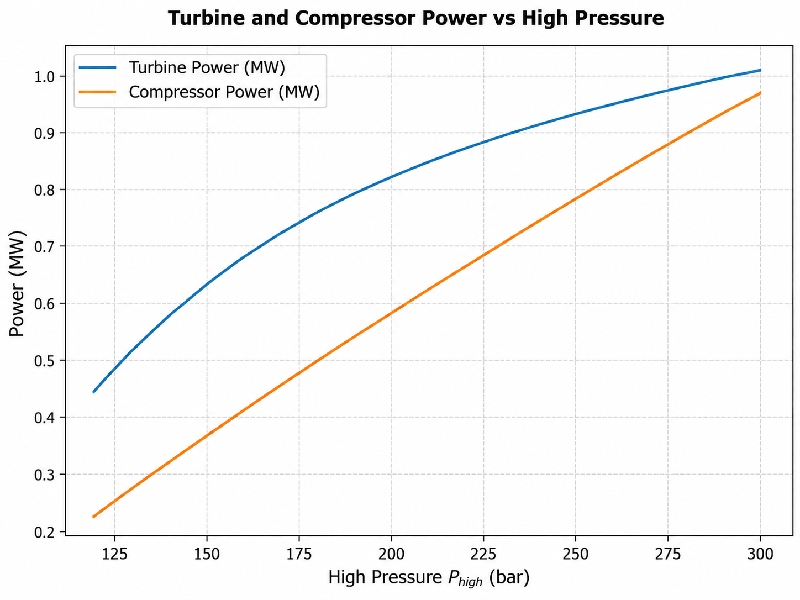
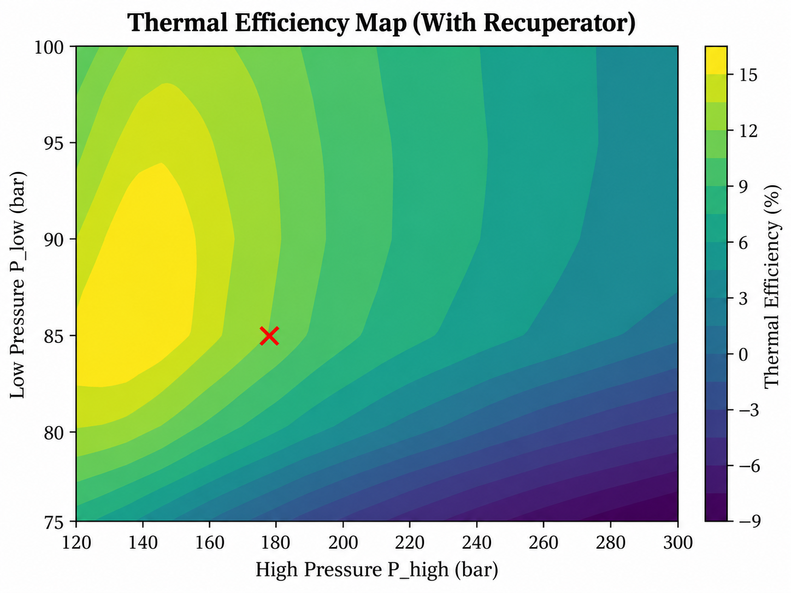
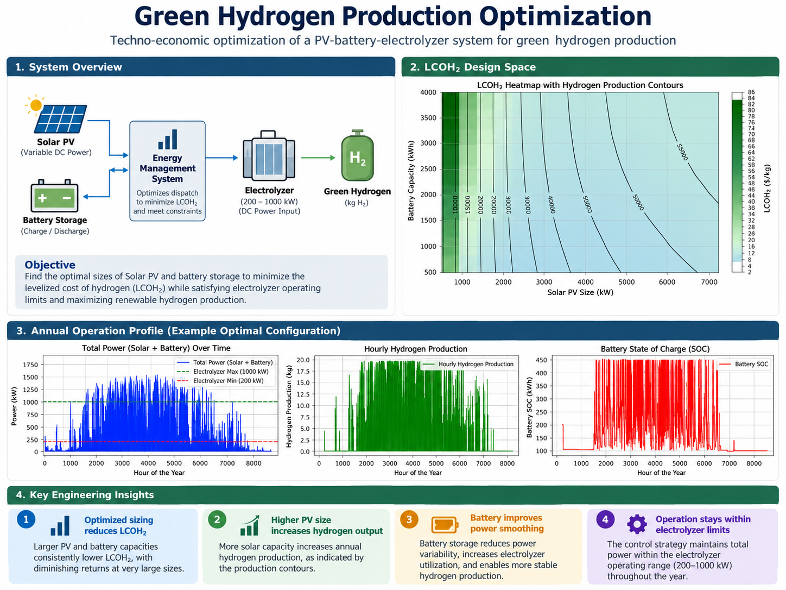
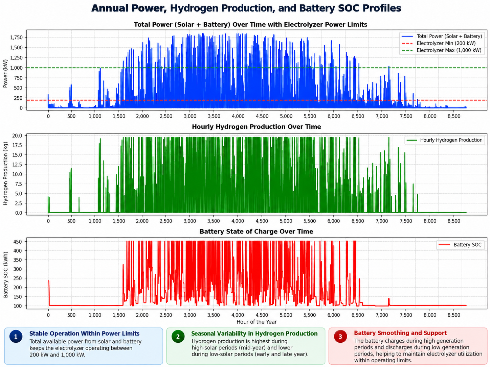
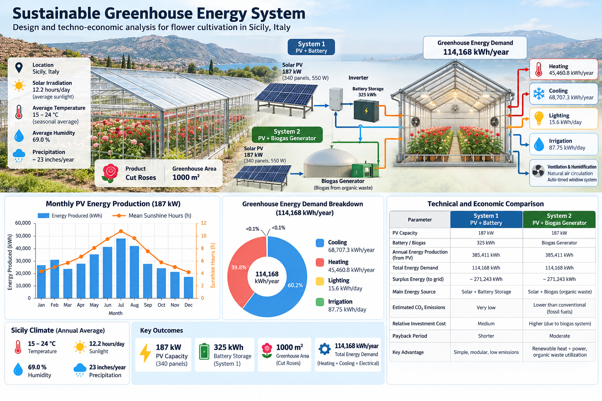

Chemical Engineer pursuing an MSc in Clean Energy Processes with experience
in hydrogen technologies, electrochemistry, materials research, thermodynamic
modelling, numerical simulation and experimental laboratory work.
Hydrogen TechnologiesMaterials ResearchElectrochemistryThermodynamicsSimulationExperimental Research
Based in Freiburg, GermanyOpen to engineering and research opportunities
About Me
Chemical engineering foundation, clean energy research focus
I work across materials, electrochemistry, hydrogen technologies,
thermodynamic systems and experimental engineering, combining modelling
with laboratory validation and engineering data analysis.
Professional Profile
Engineering across materials, processes and energy systems
I am a Chemical Engineer pursuing an MSc in Clean Energy Processes,
with a technical background spanning hydrogen technologies, electrochemistry,
materials research, thermodynamics and renewable energy systems.
My work combines numerical modelling, multiphysics simulation,
laboratory experimentation and engineering data analysis. I have worked
on hydrogen storage materials, metal hydride reactors, fuel cell related
systems, geothermal power cycles, green hydrogen production and renewable
energy integration.
I am particularly interested in understanding how material properties,
transport phenomena, process conditions and system design influence
performance. I enjoy working from engineering models and simulation
through to laboratory testing, validation and interpretation of results.
01
Hydrogen & Electrochemistry
Hydrogen storage, metal hydrides, fuel cell related systems,
electrochemical energy conversion and hydrogen process analysis.
02
Materials Research
Porous materials, nickel foam integration, material behavior,
pressure composition relationships and laboratory sample work.
03
Modelling & Simulation
Thermodynamic, transient and multiphysics modelling using Python,
COMSOL, CoolProp and engineering data analysis.
04
Clean Energy Systems
Renewable energy integration, energy storage, geothermal systems,
green hydrogen and techno-economic evaluation.
Chemical EngineeringProcess fundamentals and transport phenomena
MSc Clean Energy ProcessesHydrogen, thermodynamics and sustainable energy
Simulation + ExperimentFrom numerical models to laboratory validation
Selected Projects
Internship Research Project
Metal Hydride Hydrogen Storage Reactor Optimization
Combined hydrogen-materials research, transient pressure and temperature
simulation, nickel-foam and porosity optimization, reactor assembly and
laboratory testing for low-temperature fuel-cell cold-start support.
Simulation + LabIntegrated engineering workflow
Pressure + TemperatureTransient reactor fields
Nickel FoamHeat-transfer enhancement
Porosity + InletDesign optimization variables
Hydrogen Materials · Metal Hydrides · Multiphysics Simulation · Porous Media · Laboratory Testing
Recuperated sCO2 Brayton cycle and heat recovery path.

Performance comparison with and without recuperation.

Thermal efficiency design map for pressure selection.

Compressor outlet and turbine outlet temperature trends.

Turbine and compressor power across the pressure range.

Featured Project
Green Hydrogen Production Optimization
Techno-economic optimization of a solar PV, battery and
electrolyzer system for green hydrogen production using
hourly energy balancing and design space evaluation.
Design space showing the effect of PV and battery sizing on LCOH and hydrogen output.

Annual operating profile linking available power, hydrogen production and battery state of charge.

Featured Project
Sustainable Greenhouse Energy System
Techno-economic assessment of renewable energy options for a
1000 m² cut rose greenhouse in Sicily, comparing PV with battery
storage against PV with biogas based alternatives.
Let’s connect around hydrogen, materials and clean energy engineering.
Open to engineering and research opportunities in Germany,
particularly in hydrogen technologies, electrochemistry,
materials development, modelling and experimental research.